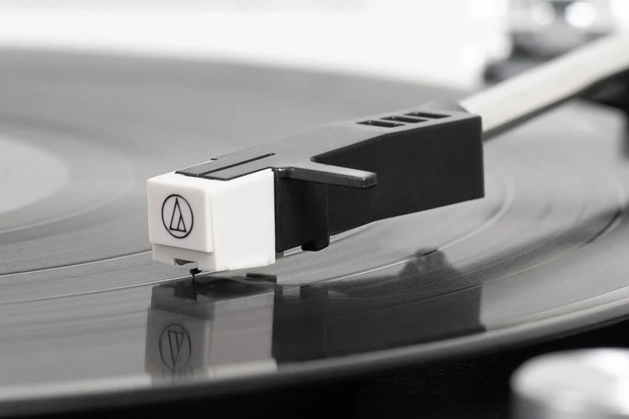
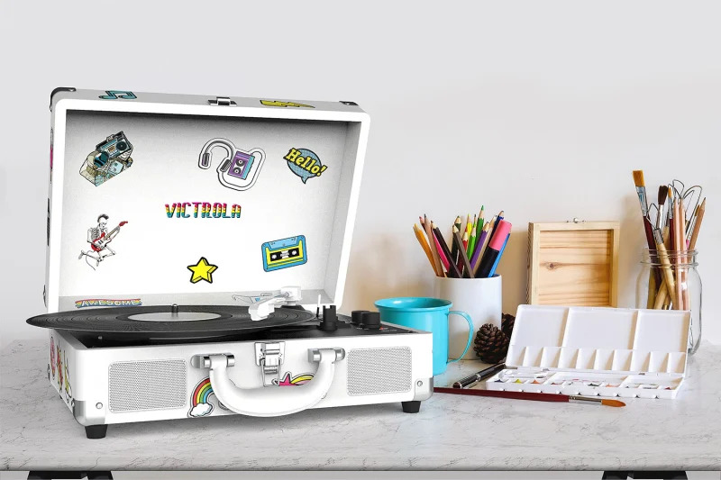
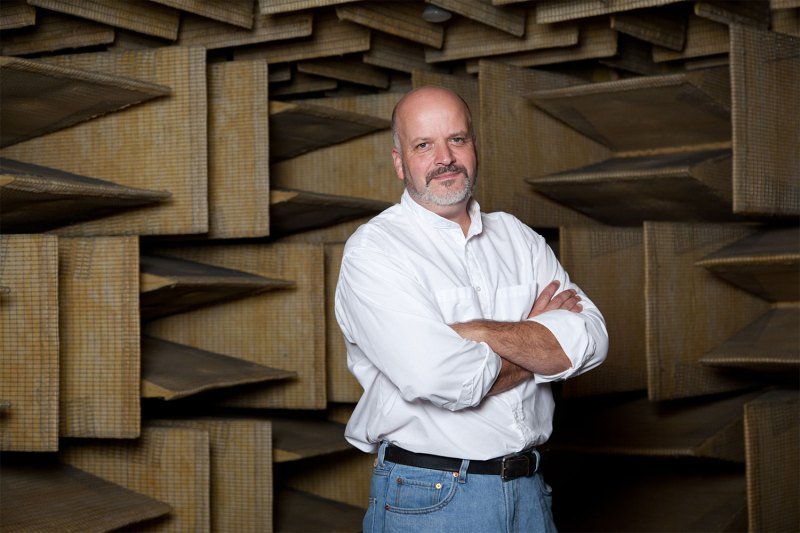

Why Vinyl Records Are Making a Comeback in 2022

Victrola
The first recorded sound was Thomas Edison’s voice, captured on phonograph in 1877 reciting part of the nursery rhyme song “Mary Had a Little Lamb.”
Continue reading
10 years later, Emile Berliner created the first device that recorded and played back sound using a flat disc, the forerunner of the modern record.
Over the course of the next six decades, records and record players were improved and standardized, with the 33 and 45 RPM records supplanting most other formats in the post WWII years.
By the 1970s, record player technology had evolved to the point where it has changed little in the intervening half century. In that time, cassette tapes came and went. CDs came and are going. And MP3 players were replaced by phones, as were cameras, pocket planners, and our social lives, more or less.
This year, 2020, marks the first year in more than a generation since record sales — that is to say physical vinyl records — have surpassed CD sales. The reasons for this are twofold: CD sales have dropped dramatically in recent years, while sales of vinyl records are actually up this year. And while you might think it’s nostalgic Boomers or Gen Xers behind the renaissance of records, in fact surveys show it’s millennial consumers driving the rising trend in vinyl sales.
Scott Hagen
The way most people listen to music has changed. “You hear music when you’re in the coffee shop, in the car, in the gym, just walking down the street sometimes, we hear it everywhere,” says Scott Hagen, CEO of Victrola. “In every store we go into we hear it, and we’re consuming more music than ever before, but not in the same way. The ability to stop and sit and listen to an album from beginning to end, that’s something that always has been and always will be relevant.”
Charlie Randall, CEO of McIntosh Labs, agrees, saying: “I think it’s natural for any generation to think that the technology of their time will be replaced by future technology and go extinct. In large part I think that’s the case except with vinyl records. There is something romantic about records, something satisfying about opening the album jacket, seeing the fantastic artwork and studying the liner notes while listening to the album. That’s something that today’s digital files just can’t replace.”
There is nothing fast about a record. Whereas you can tap on your phone and pull up a song on Amazon Unlimited or Apple Music in a matter of seconds, with a record you have to remove it from the sleeve, open the top of the record player, place the vinyl disc carefully and set the stylus, then switch it all on and wait as that warm crackle prefaces that rare experience: music as the activity, not as the backdrop.

Victrola
In an epoch at once ever more frenzied yet also ever more hemmed in during the days of coronavirus social distancing, now more than ever people are embracing this classic “listening in” approach to music. And whereas in the past, a record player might have seemed a luxury item that may even have verged on the frivolous, not only is a new appreciation for how we listen a factor, but any more, high quality turntables are hardly priced out of range for the average consumer.
“We did a lot of insight gathering from our current customers and from people who expressed interest in being a first time record player owner,” said Hagen, “and what we learned is that people looking to play vinyl want something with the convenience, the ease of use of a classic suitcase record player, but that looked beautiful in the home and even had a little bit better sound than an entry level player might have sounded like.
“We not only identified those trends, but we also built a record player that looks and sounds great and is still just $99,” Hagen said, referring to Victrola’s new Eastwood Hybrid Turntable. Why hybrid? Because far from being a throwback, this device, like many similar pieces of audio hardware these days, is also a Bluetooth speaker, so your modern devices can stream just as your classic collection of 33s and 45s can spin. “This category of hybrid record players is just a great way to bring people in to vinyl.”
So vinyl is here to stay, it seems, despite all technological advances that would have seemed to threaten it. The same RIAA study that found records surpassing CDs also revealed that streaming music now account for more than 85% of all music enjoyed. Only 6% of music is now downloaded, even less than is physically purchased in the form of records, CDs, or the last tapes.
So records don’t sell like digital, but that doesn’t mean they’re on the outs.

Charlie Randall
“I think they are certainly here to stay,” says Charlie Randall. “We are seeing records and turntables become more popular and more advanced in technology like [with] our MTI100 integrated turntable, for example.”
“I think it’s got a ton of staying power,” Scott Hagen says. “In 2013, there were about $200 million in sales in the U.S. The year, we’re probably going to eclipse $600 million just in America. I see the future of vinyl being it becoming more a staple in homes where people value listening to music, not ever less. We just did a survey of more than 400 people, people between 18 and 70 years old, and asked them if they had a vinyl record player in the home, and more than 55% said yes. But what was really interesting, is of those people who had a record player, more than 70% said they had used it, had listened to a record within the last month.”
“But even more compelling for me,” Hagen added, “was that with the younger people 18 to 29, more than 60% had a record player. And others were planning to get one.”
Why does Scott Hagen think that record players are not only not going anywhere but are getting ever more popular?
“Because the world that we’re in needs this kind of format — it needs us to slow down and enjoy a really nice meal once in a while, a good bourbon or cocktail now and then, and to sit down and just listen to music sometimes.”
Go Back